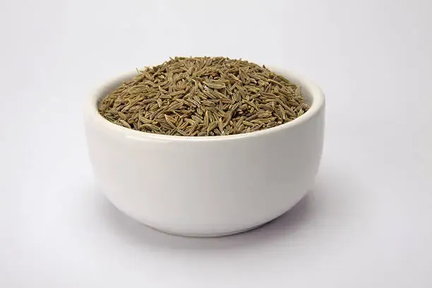

Cumin Seeds Supplier from India
Cumin Seeds — India Supplier & Exporter (Unjha Belt, Gujarat)
Gujarat-based supplier of Indian cumin seeds for international importers, wholesalers, food processors, spice brands and distributors worldwide.
Sourced directly from the Unjha belt, Gujarat — one of India's primary cumin trading and production regions. Available as machine cleaned and sortex cleaned, based on buyer purity requirement and seasonal availability.

Cumin Seeds

Cumin Seeds
🧪 Want to check quality before placing a bulk order?
We can arrange cumin seed samples (machine cleaned or sortex) before you commit. Let us know your required purity, quantity and destination.
Request a Sample on WhatsAppExport Grade Cumin Seeds — Full Specifications
Final values are confirmed against buyer requirement, supplier availability and pre-dispatch quality check.
| Parameter | Specification |
|---|---|
| Product Name | Indian Cumin Seeds |
| Origin | Unjha belt, Gujarat, India |
| Also Known As | Jeera, Zeera, Comino |
| Quality | Machine Cleaned / Sortex Cleaned |
| Purity | 98% / 99% / 99.5% as per buyer requirement |
| Moisture | Max 8% – 10% |
| Admixture | Max 1% or as per agreed specification |
| Color | Natural Brown |
| Packaging | 25kg / 50kg PP Bags; custom packing on request |
| MOQ | 1 MT or as per buyer requirement |
| Private Label | Available on request, subject to quantity and packaging feasibility |
| Shipment Terms | FOB / CIF Available |
| HSN Code | 09092110 |
Quality Control
Checked before dispatch.
We align grade, cleaning level, packing, moisture, purity and shipment documentation before confirming supply.
Applications
Built for international buyers
For retail packs, spice blends and private label product lines across international markets.
For seasonings, snacks, sauces and ready-to-eat food product manufacturing.
For bulk trading, local market distribution and regional supply chains.
For regular container-based sourcing from India across EU, Middle East, US and other markets.
FAQ
Common buyer questions
Request a quote for cumin seeds
Share your required purity, quantity, destination port and packaging preference. We will respond with suitable sourcing and pricing options — typically within 48 business hours.
Submit Inquiry✅ No commitment required · 📦 Samples available · 📄 All export documents in place